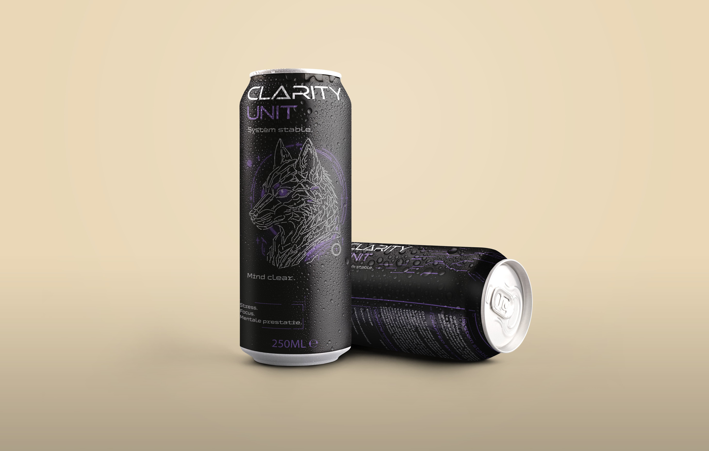
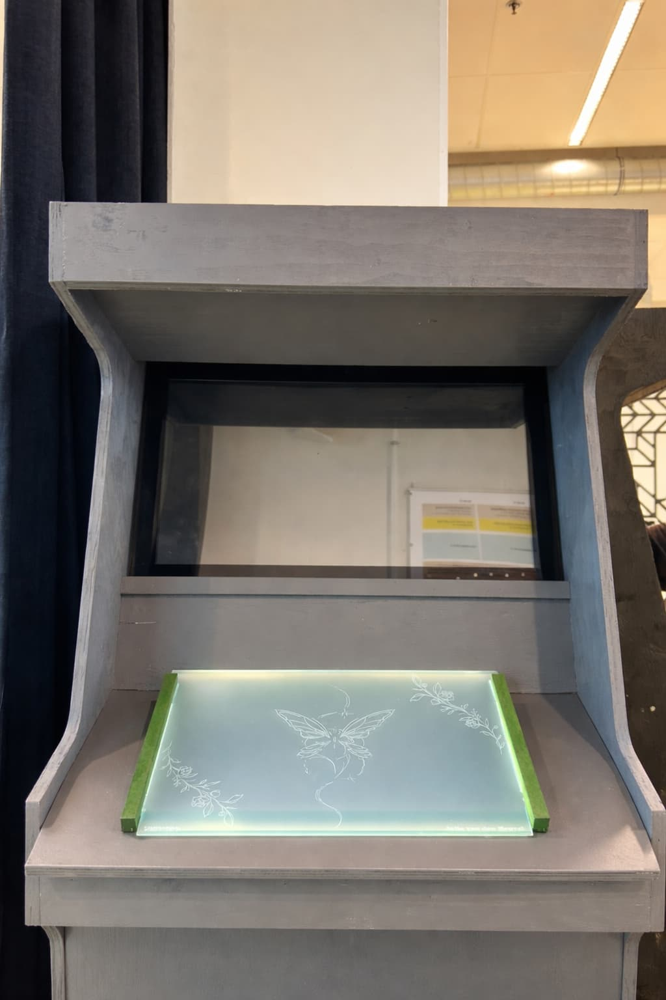
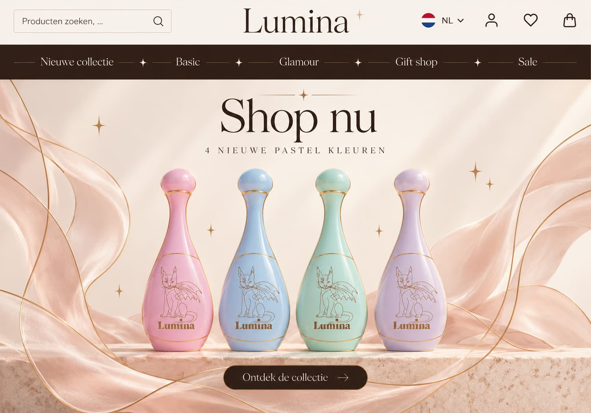
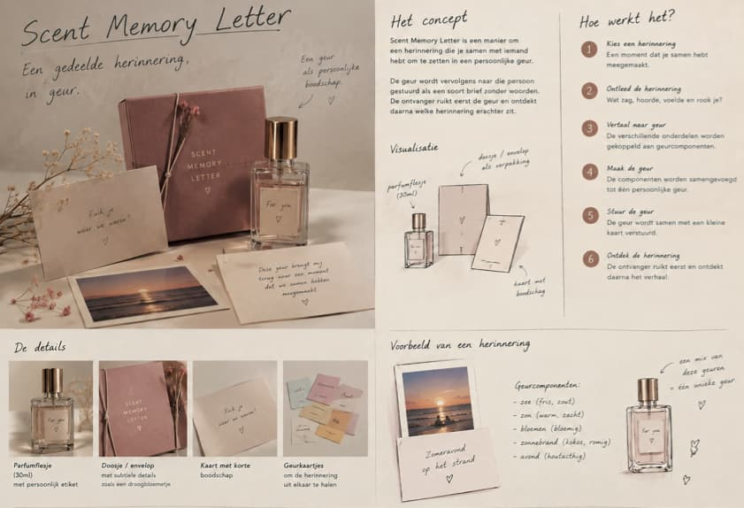

My Work
Een selectie van projecten waar ik met veel plezier aan heb gewerkt. Elk project vertelt een eigen verhaal door een zorgvuldige balans van vorm, kleur en typografie. Of het nu gaat om een complete merkidentiteit, luxe verpakkingen of 3D ruimtelijke concepten, mijn werk streeft naar een blijvende visuele impact.

Kylie Cosmetics
Van goud-roze verpakking tot complete show installation: een luxe visuele identiteit voor Kylie Cosmetics.

Clarity Energy drink
Modern verpakkingsontwerp voor een energiedrank.

Game Box Design
Een eigen gamebox ontworpen en uitgewerkt in Adobe Illustrator voor een spatial design-opdracht.

Lumina Party Parfum Mix
Een eigen parfumbrand ontwikkeld tijdens mijn vorige opleiding aan het GLR. Lumina combineert een heerlijke geur met een feestelijke drankmix, in verschillende kleuren en varianten, met of zonder glitter.

Scent Memory Letter
Een persoonlijke geurbrief waarin een gedeelde herinnering wordt vertaald naar geur. De ontvanger ontdekt eerst de geur en daarna het verhaal erachter.